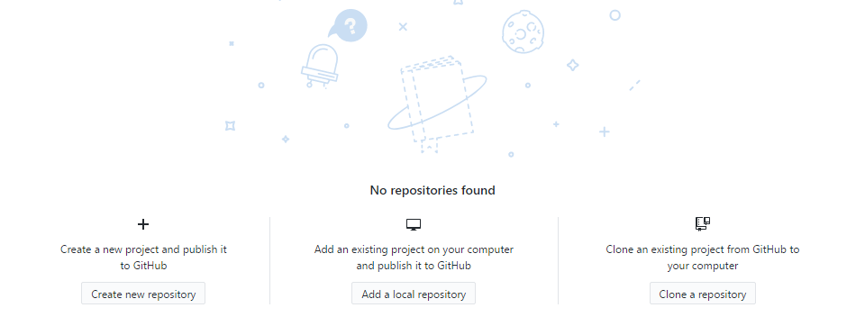

[工具] 二次元图片放大与降噪神器--waifu2x-caffe
By 夜半殇
2017 12月09日
waifu2x-(老婆)...相信常涉及旧动漫画质提升与图片放大降噪的巨佬都知晓这专门对二次元图片进行放大降噪软件...
waifu2x是日本某个宅神大佬受他人的算法论文启发而开发的二次元图形降噪算法,在针对普遍为一大块色块的动漫图片来说是降噪放大特别有效果,而其原理则是通过神经网络，针对漫画特殊的线条、颜色、网点等特点，将其变成YUV并对Y部分处理,之后对样本进行放大降噪、模拟运算和学习,而在进行中放弃了色彩渐变、强化了线条等,也因此造成了对普通照片的不感冒(就是在....

Github Desktop的简单上传教程
By 夜半殇
2018 01月21日
gitHub于2008年4月10日正式上线，除了git代码仓库托管及基本的 Web管理界面以外，还提供了订阅、讨论组、文本渲染、在线文件编辑器、协作图谱（报表）、代码片段分享（Gist）等功能。在最开始的时候，作为新首页，我们又如何将自己的文件上传到自己的Gith上...(本文只提供通过Github Desktop进行最简单的上传,还请大佬放我一马..)